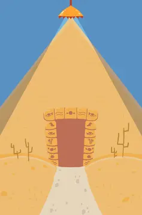
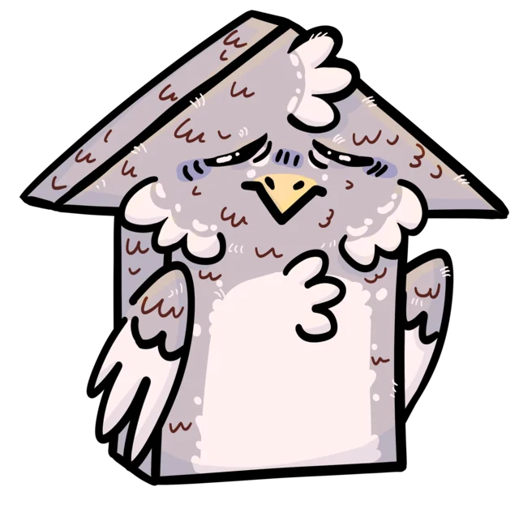
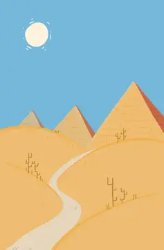

Ball is God?! Завъртете кулата. Станете ударът.
Хардкор аркада с вертикално спускане, в която хоризонталното плъзгане върти кулата около падащия Espa. Прескачайте безопасни кацания, заредете комбо удар и си пробийте път през митичен свят, където един незащитен удар слага край на рунда.
Активно производство: десет сцени на локации, босове, разклоняващи се диалози и пътища на кармата, които променят правилата на играта.
Завъртетеплъзнете кулата около Espa
Рискпропуснете три безопасни кацания
Разбиванепробийте платформата
В текущата версия
Кармата променя не само диалога.
Светлите, неутралните и тъмните пътища на кармата променят поведението на щита, предупрежденията, агресията на враговете и фазите на босовете, така че историята променя начина, по който играете.
Състояние на версията Активно производствоВсички десет свята с диалози
Фонове за диалозите във всичките десет свята, по реда на спускането от Ena до Deka.





Текущ производствен UI
Избор на ниво, диалози и екрани с резултат в текущата версия.
Това е текущият поток в реда, в който го срещате: избор на ниво, диалог, ключов избор, после екран за победа или отделен екран за загуба. Всяко изображение по-долу използва арт от производствения проект в Unity.
Небесният маршрут избира генерирани нива в десет глави от по 100 нива.
Производственото меню картографира десет локации в глави от по 100 нива и отваря директно избрания рунд.

 201
201Диалогът се води вътре в локацията.
Портретът на героя, артът на локацията и табелката с името на говорещия споделят една вертикална рамка.


Shash
Продължете тогава - но не мислете, че ще бъде лесно. Очакват ви Trials, които ще направят всичко преди да изглежда като обикновена дреболия.
04 / Ключов избор
Отговорът става част от спускането.
На локални нива 90 и 100 специалният панел изисква решение за пощада или убийство, преди диалогът да реши изхода от рунда.

Пощади
Убий
05 / Менюта с резултати
Победата води напред. Поражението връща към същото предизвикателство.
Текущата версия има две отделни състояния за резултата: PanelWin предлага повторение и следващо ниво, докато PanelOver оставя едно недвусмислено действие за повторение.
Победа · PanelWin
Спускането е завършено
 Повторение
Следващ
Повторение
Следващ
Повторение
Следващ
Герои в диалозите
Лица, срещнати по пътя надолу.
Всички 25 героя с валидни производствени двойки портрети с отворено и затворено изражение са включени по-долу. Задръжте курсора или фокусирайте карта, за да смените изражението.





Преглед на играта
Ball is God?! е хардкор аркадна игра за падане през въртяща се кула.
Идеята
Водете Espa надолу по божествена кула. Една грешка може да сложи край на играта, а големите ви избори променят начина, по който работи светът.
Текуща версия
Внедрени са десет сцени на локации, процедурно генериране на кули, комбо удар, щит с плъзгане, конфигурации на босове, разклоняващ се диалог, производствени менюта и портрети със сменяемо изражение.
Аудитория
Играчи, които обичат трудни мобилни аркадни игри, тайминг между риск и награда и босове, с история, която да следват.
Статус
Активно производство. Последната работа обхваща системите на играта, арта на световете, тестването и усещането от играта на телефон.
Характеристики
Какво правите в Ball is God?!
Спускане с въртене чрез плъзгане
Хоризонталното плъзгане върти кулата около автоматично падащия Espa, подравнявайки пролуките, опасностите и безопасните платформи.
Хардкор аркаден натиск
Един незащитен удар слага край на играта, така че трябва да четете кулата и да премервате всеки ход.
Босове и митични светове
Десет сцени на локации, всяка със свои босове, пренасят историята от един свят към следващия.
Избори, които променят правилата
Милостта, силата и кармата променят диалога, правилата на щита, агресията на враговете, сигналите за атака и фазите на босовете.
Цикъл на играта
Как се играе Ball is God?!
- Стъпка 01Прочетете спускането
Сканирайте следващите платформи, пропуски и опасности и търсете безопасни моменти за действие, докато падате.
- Стъпка 02Завъртете кулата
Хоризонталното плъзгане завърта света около Espa, подравнявайки безопасна платформа или желана пролука.
- Стъпка 03Риск и разбиване
Прескочете три платформи, за да заредите комбо удар, след което пробийте конструкциите, докато щитът ви предпазва от една фатална грешка.
- Стъпка 04Изберете следствието
Милостта и силата оформят кармата, диалога и правилата на играта, които се пренасят върху враговете и босовете.
История / свят
Митична кула, където всеки избор слиза заедно с вас.
Ball is God?! започва от детско увлечение по мобилните аркади с вертикално спускане: разчитане на пролуките, бързи реакции и оцеляване по инстинкт.
Форматът можеше да побере повече: босове, герои с характер, история и морално напрежение. Сегашният проект следва Espa през десет сцени на локации и група странни герои, с избори, които променят и историята, и играта.
Така целта се превърна в проста аркада с вертикално спускане, с напрежението на битка с бос и последиците на RPG, водено от сюжета.
- Визия
- Аркада с въртяща се кула и митична история
- Текущ световен обхват
- Десет локации и конфигурации на босове
- Етап на историята
- Пълна чернова на дълга история
- Производствено състояние
- Активно производство
С един поглед
Просто управление с плъзгане и история, която променя правилата.
Управлението с плъзгане за въртене е мигновено. Останалото идва от митичните светове, босовете и изборите, които променят играта.
Текущата версия вече съчетава детерминирано генериране на кулата, удари с риск и награда, провал след един удар, босове, разклоняващи се диалози и карма, която променя геймплея.
- Жанр
- Сюжетна аркада с вертикално спускане
- Целева платформа
- iOS / Android
- Формат на сесията
- Бързи рундове, базирани на умения
- Студио
- WillowinWorlds
Изтегляне на материали
Материали на Ball is God?! за пресата и създатели
WebP визуализации за отразяване в пресата, преглед от издатели и препратки в страници на магазини. Изходни файлове в пълна резолюция са налични при запитване.
Марка и герои
Иконата на играта плюс всички 25 настоящи героя, които имат пълни производствени диалогови портрети. Имената съвпадат с ключовете за локализация в Unity.
EspaПортрет на героя на играча.
RevlaДиалогов портрет от производствената версия.
ShashДиалогов портрет от производствената версия.
ShushДиалогов портрет от производствената версия.
ShishДиалогов портрет от производствената версия.
GigoДиалогов портрет от производствената версия.
GogaДиалогов портрет от производствената версия.
GigaДиалогов портрет от производствената версия.
AskoldДиалогов портрет от производствената версия.
MirasДиалогов портрет от производствената версия.
HihДиалогов портрет от производствената версия.
HehДиалогов портрет от производствената версия.
HahДиалогов портрет от производствената версия.
MusyaДиалогов портрет от производствената версия.
DusyaДиалогов портрет от производствената версия.
SusyaДиалогов портрет от производствената версия.
VladusДиалогов портрет от производствената версия.
FrishaДиалогов портрет от производствената версия.
LurenДиалогов портрет от производствената версия.
KurenДиалогов портрет от производствената версия.
Don YagonДиалогов портрет от производствената версия.
LuryaДиалогов портрет от производствената версия.
KhleyaДиалогов портрет от производствената версия.
VaronДиалогов портрет от производствената версия.
WhiteДиалогов портрет от производствената версия.
Фонове на менюто
Текущ производствен арт, използван от небесната система за избор на ниво.
 Небесно меню
Небесно менюСветове с вертикално спускане
Пълен набор от фонове за десетте текущи локации, подредени от Ena до Deka.
 01 · Небесен святФон Ena за вертикално спускане.
01 · Небесен святФон Ena за вертикално спускане.
 02 · Космически святФон Dyo за вертикално спускане.
02 · Космически святФон Dyo за вертикално спускане.
 03 · Бурен святФон Tria за вертикално спускане.
03 · Бурен святФон Tria за вертикално спускане.
 04 · Снежен святФон Tessera за вертикално спускане.
04 · Снежен святФон Tessera за вертикално спускане.
 05 · Свят на вулканиФон Pente; анимиран в играта.
05 · Свят на вулканиФон Pente; анимиран в играта.
 06 · Светът на океанаФон Eksi за вертикално спускане.
06 · Светът на океанаФон Eksi за вертикално спускане.


07 · Пустинен святФон Epta за вертикално спускане. 08 · Горски святФон Ohto за вертикално спускане.
08 · Горски святФон Ohto за вертикално спускане.
 09 · Пещерен святФон Ennea за вертикално спускане.
09 · Пещерен святФон Ennea за вертикално спускане.
 10 · Адски святФон Deka за вертикално спускане.
10 · Адски святФон Deka за вертикално спускане.
Сюжетни аркадни фонове
Пълен набор от диалогови локации: Залата на светлината плюс фонове за всичките десет свята.
 00 · Зала на светлинатаФон на началния диалог.
00 · Зала на светлинатаФон на началния диалог.
 01 · Небесен диалогФон на историята Ena.
01 · Небесен диалогФон на историята Ena.
 02 · Космически диалогФон на историята Dyo.
02 · Космически диалогФон на историята Dyo.
 03 · Диалог на бурятаФон на историята Tria.
03 · Диалог на бурятаФон на историята Tria.
 04 · Снежен диалогФон на историята Tessera.
04 · Снежен диалогФон на историята Tessera.
 05 · Диалог на вулканаФон на историята Pente.
05 · Диалог на вулканаФон на историята Pente.
 06 · Диалог на океанаФон на историята Eksi.
07 · Диалог на пустинятаФон на историята Epta.
06 · Диалог на океанаФон на историята Eksi.
07 · Диалог на пустинятаФон на историята Epta.

 08 · Горски диалогФон на историята Ohto.
08 · Горски диалогФон на историята Ohto.
 09 · Диалог в пещератаФон на историята Ennea.
09 · Диалог в пещератаФон на историята Ennea.
 10 · Адски диалогФон на историята Deka.
10 · Адски диалогФон на историята Deka.
ЧЗВ за Ball is God?!
Често задавани въпроси за Ball is God?!
Каква игра е Ball is God?!
Хардкор аркада с вертикално спускане. Въртите кула около падащия Espa, прескачате безопасните кацания, за да заредите удари, и си пробивате път през митични светове.
Как се играе Ball is God?!
Плъзнете хоризонтално, за да завъртите кулата, прескочете три платформи, за да заредите удар, и плъзнете вертикално, когато щитът с презареждане трябва да поеме смъртоносен удар.
Излязла ли е вече Ball is God?!
Още не. Играта е в активно производство: системи на играта, арт на световете, сюжетно съдържание и тестване. Няма обявена дата за излизане. Целевите платформи са iOS и Android.
Какво отличава Ball is God?!
Съчетава аркаден натиск между риск и награда с десет локации и карма, която променя диалозите, враговете, предупрежденията, щитовете и босовете.
Кой прави Ball is God?!
WillowinWorlds, независимо студио за мобилни пъзели и аркадни игри.
Мога ли да използвам прес материалите на Ball is God?!
Да, за пресата, за преглед от издатели и за препратки в магазини. Изходните файлове остават частни, освен ако не ни ги поискате.
Ball is God?! Devlog
Какво се промени и кога
- Световни повърхности и валидиране на опасностите
Представянето на героите, детерминистичното генериране и опасностите от тръни преминаха през обща визуална проверка и валидиране.
- юли 2026 гДоработка на UI и героите
Изборът на ниво, общите контроли за действия, вертикалното оформление на диалозите и сдвоените изражения на героите вече са налице.
- февруари 2026 гПреглед на обхвата на проекта
Екипът завърши голям етап по интегрирането на историята и прегледа пълния мащаб на проекта: десет свята, морални избори, босове и множество финали.
- април-май 2025 гПренаписване на историята и способности
Пълната история беше пренаписана, способностите на героите бяха подобрени и моралните последици станаха по-ясни.
- август 2024 гИсторията започва
Екипът реши, че Ball is God?! трябва да бъде повече от проста аркада със спускане, и добави митична история и визия за морален избор.
- юли 2024 гОригинална концепция
Проектът започна като първата идея за игра на студиото: бърза вертикална аркада за падане през божествена кула.
- Текуща версияАркада и история в една версия
Спускането по въртяща се кула, комбо ударът, щитът с плъзгане, босовете, диалозите и кармата вече работят заедно в една версия.